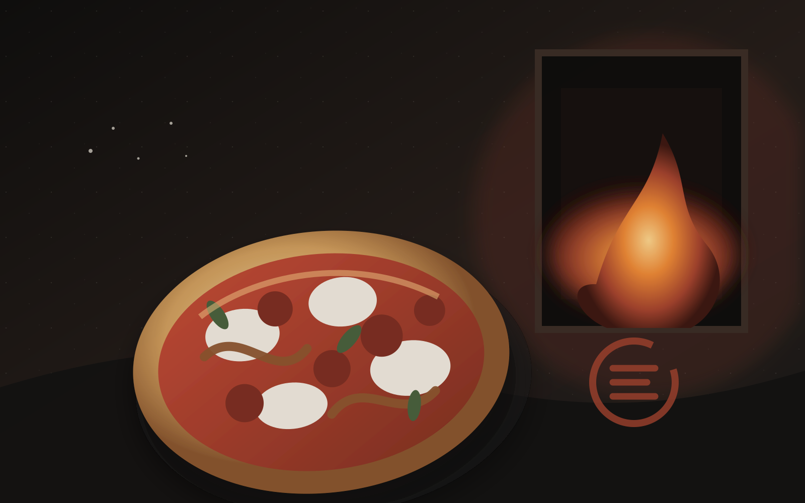
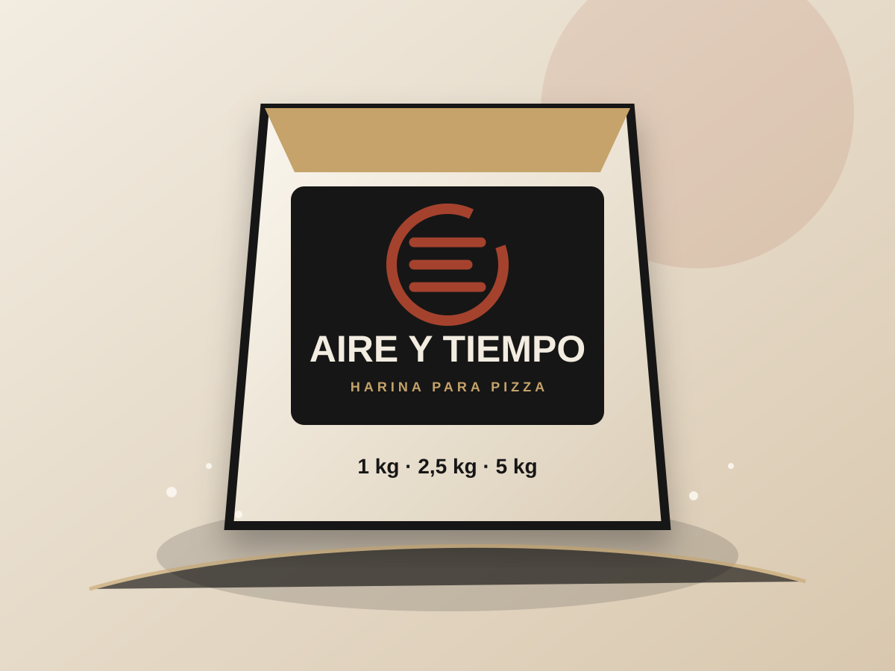
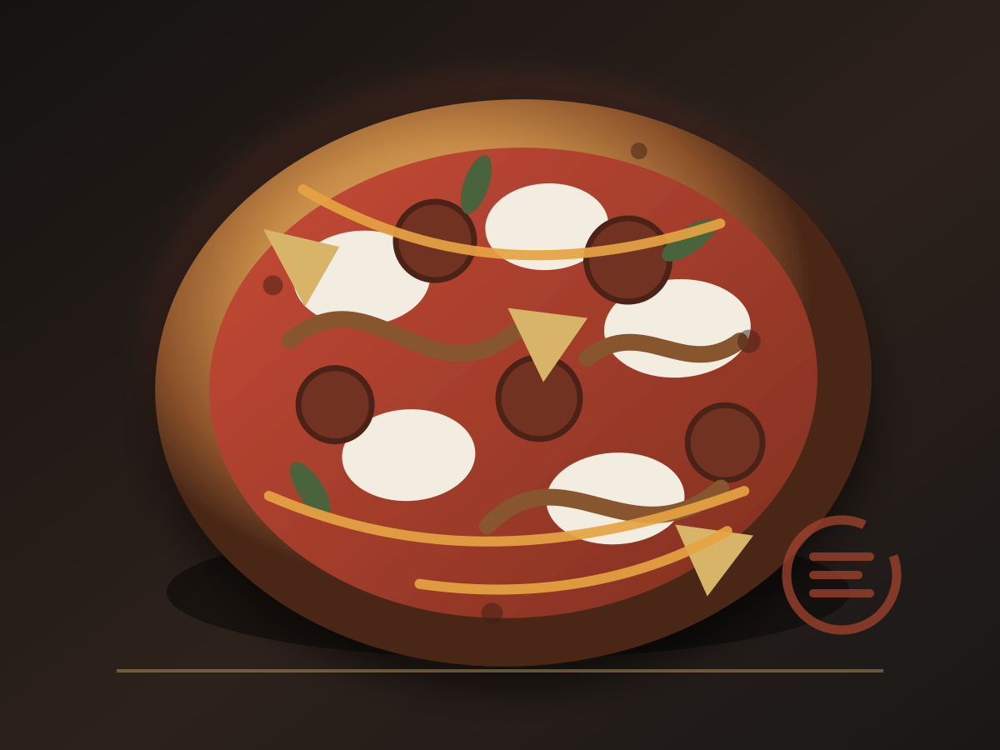
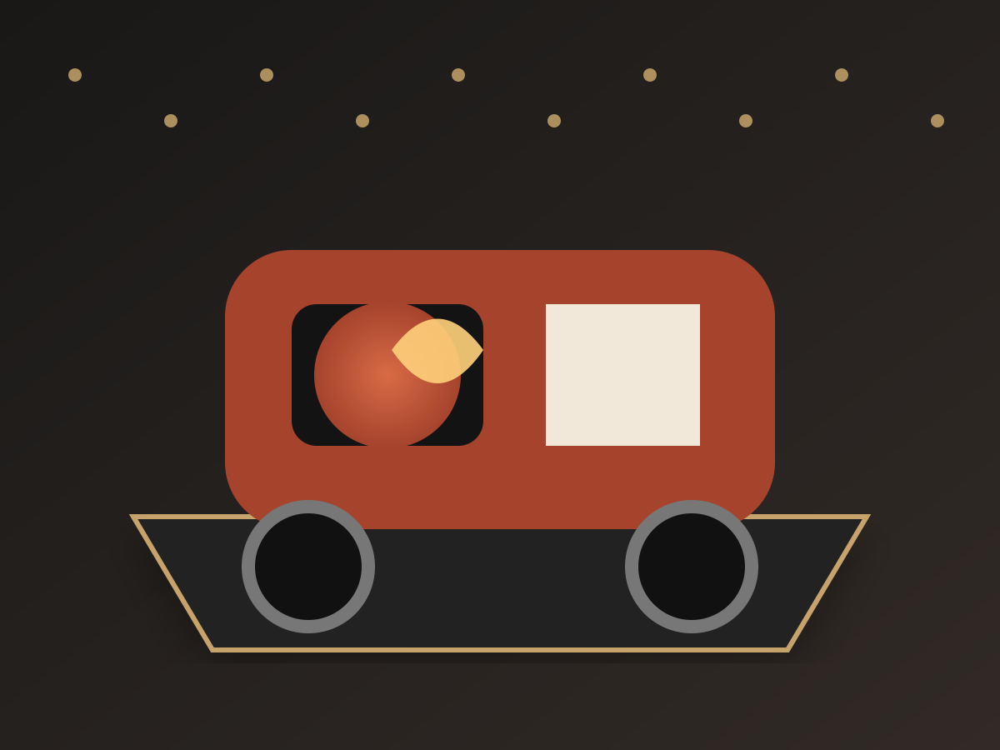

Masa propia, productos para casa y una pizzería que viaja.
La oportunidad
Comprar una pizza, terminarla en casa, hacer la masa, aprender el método o contratar una pizzería completa.
Diferenciación
Blend propio, fermentación y métodos documentados.
Productos diseñados para cada horno y forma de consumo.
Ingredientes y sabores colombianos sin folclor artificial.

Producto plataforma
Una harina que no solo se vende: abre recetas, métodos, lotes, comunidad y recompra.

Pizza insignia
Chorizo artesanal, cebolla caramelizada y reducción de panela con maracuyá.
Técnica aprendida. Ingredientes propios. Un camino nuevo.
Experiencias
Bodas, empresas, celebraciones y talleres con producción en vivo.

Sistema completo
Tienda, cobertura y pedidos.
Bitácora, recetas y herramientas.
Producción, lotes, inventario y rutas.
Control, Studio, validaciones y fuentes.
Estado actual
La versión pública permite recorrer la marca; el Centro interno organiza Control, Operación y Finanzas, con Datos maestros y Actas como herramientas auxiliares de gobierno.
Masa · Fuego · Territorio
Marca, comercio, operación y datos en una misma demostración.